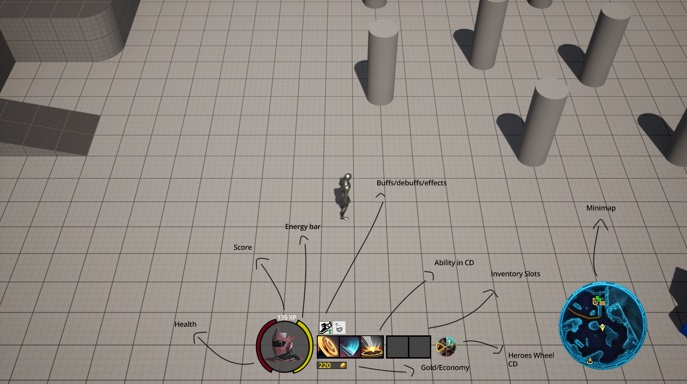
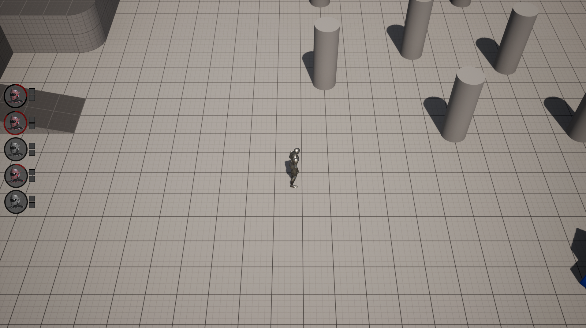
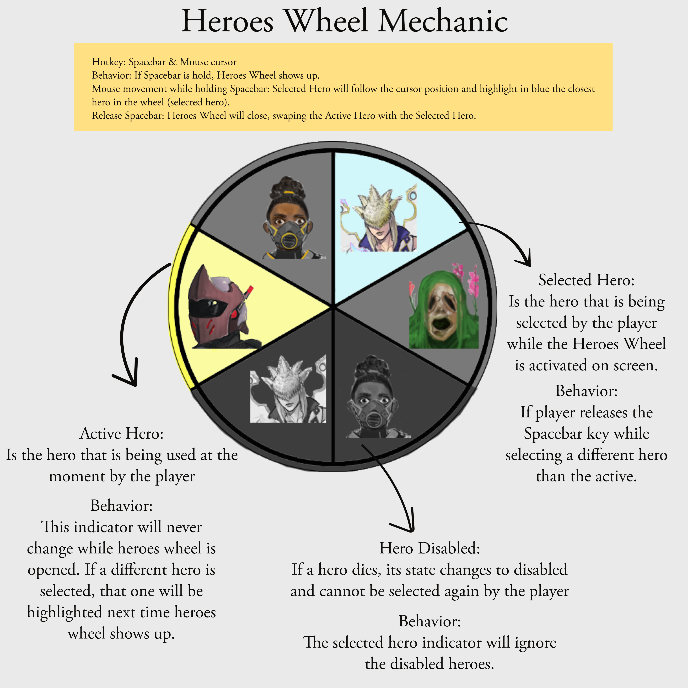
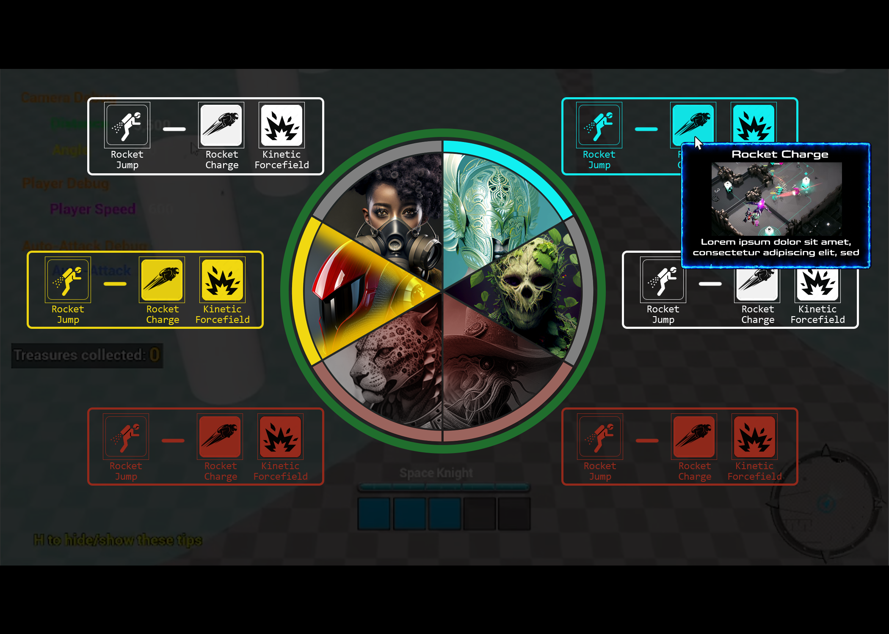
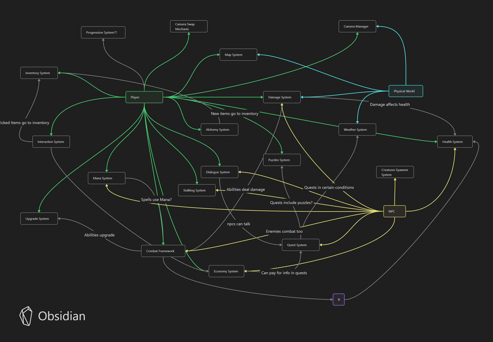
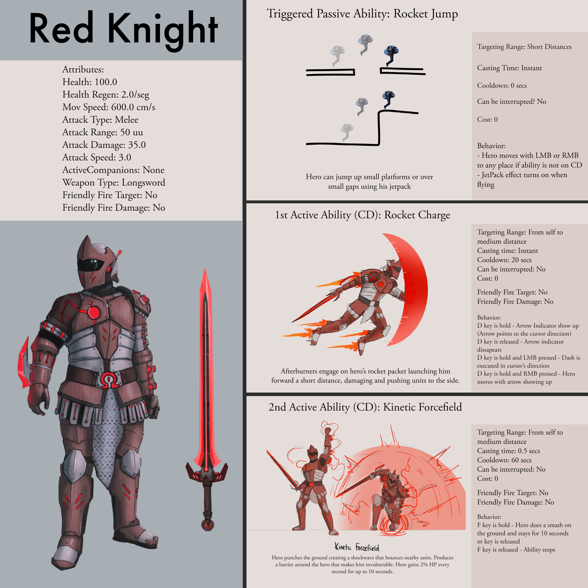

Project Z is a Sci-fi dungeon crawler game. My role here is technical game designer.
• Designed the core loop, core pillars and GDO.
• Prototyped 2 characters from initial concept to gameplay in unreal with stats, animations and VFX included.
• Scripted AI melee and ranged enemies with their own abilities and behaviors.
• Handled game collisions and created a damage system that facilitated the interaction between characters.
• Worked hand to hand with the level designer to create 11 dungeon rooms with puzzles and traps.
• Carried out one-page documents for heroes, enemies, levels and other game features.
• Designed in Photoshop the UI and HUD for second to second gameplay.
• Created and maintained the Game wiki with all the elements required for an MVP.
• Developed technical guidelines to install software, create characters from templates and use features in unreal engine 5.
• Lead daily meetings with the team to tackle roadblocks in the development and find solutions.
• Set up pipelines based on the skills of the team for the whole development.
• Created a roadmap and sprint planning documents.
• Wrote guidelines to share with the team.
• Led daily meetings to track advance of each member and to tackle possible roadblocks in the development.
Left and Right click of the hero 1. Right click (blue) is to move and follow allies while Left click (red) is to move and attack any closer enemy during the movement or to select enemies and attack them.
First Ability of the hero 1 is a dash that pushes enemies out of the way and stun them for 1 second
Second Ability of the hero 1 is a smash into the floor, gets inmortal for 5 seconds but can't move until key is released of the 5 seconds are over. It applies damage to nearby enemies
Hero 1 dealing with melee and ranged enemies.
Hero 2 has the same mobility than the other hero, only passive and abilities change. The hero 2 is auto-attacking crystals that stick to the body of the enemies, and when F key is pressed, all crystals spawned in the world explode, showing a little vfx. Every crystal adds a multiplier of damage.

A placeholder layout for the HUD - This was useful to know all the elements that we wanted in the screen for the second to second gameplay

Tab key functionality - to see all the characters condition during gameplay
Final Sketch - At this point we agreed on the final design for the HUD

initial design of the One Page document for a swapping characters mechanic
Improved design for the swapping characters mechanic

A test with placeholder images to see how would it look in-game

Original systems map of the game, this helped us to visualize what systems we needed and how they would affect each other

One Page Document for one of the heroes
Document with the initial inputs for the prototype
Document to manage all the assets required by the devs - The ideal case is that a dev fills the spaces with the info of the asset that needs to be bought. The colored spaces are drop downs with different options to select. This helped the CEO to track and be aware of the team needs.
Step by step guide to create a new character (hero) - The purpose of this was that anyone in the team would be able to do it without further help just by accessing to this doc
Technical guideline to install Git LFS and tortiose for the locking files system - With this document we ensured that everyone in the team had the source control installed and configured, ready to work
An early general roadmap of the development of the project


.png)